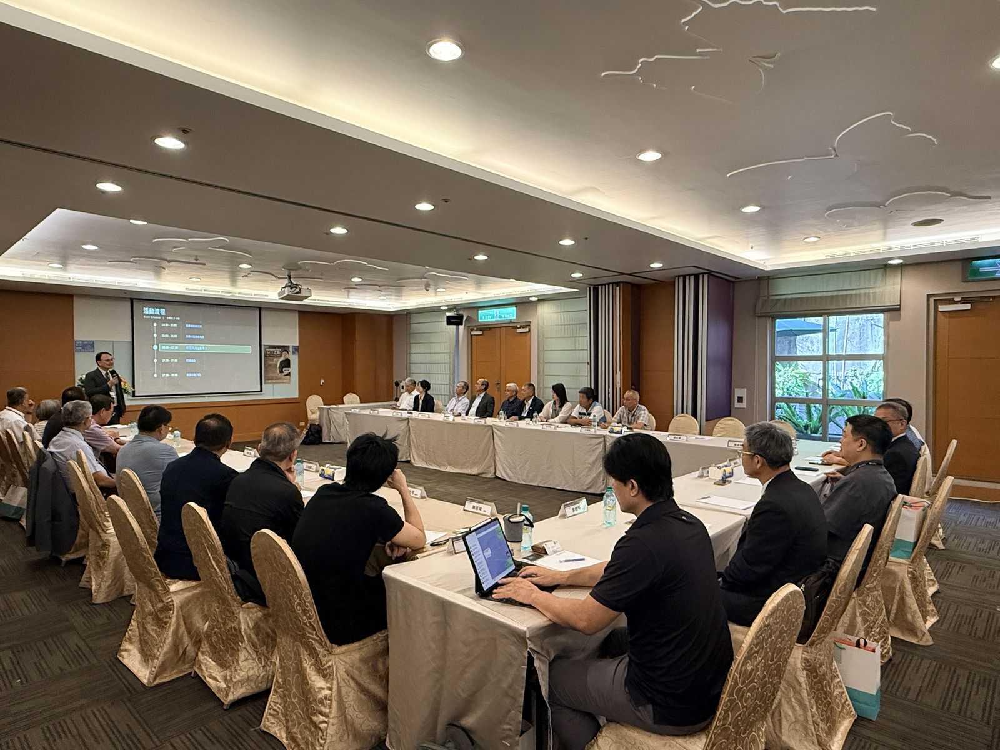

一般會員
$3,000/ 年
- 教育訓練自由參加 (上限 5 人次)
- 參加產業趨勢論壇與講座活動
- 加入會員專屬群組共享最新資訊
- 專家或技術人員診斷 1 次
全方位協助產業界推動 AI 轉型、永續治理與組織升級
提供 AI+AOI 影像辨識、生成式 AI、智慧排程與生產優化。協助企業建立數據基礎，實現製程優化與能源管理智慧化。
輔導導入 ISO 14064 溫室氣體盤查、ISO 14067 產品碳足跡、廢污水再生與智慧化能資源管理，實現企業碳排可視化。
透過「企業印記轉型」與「學習型組織」理論，提供客製化教育訓練與系統思考，從營運、組織至文化層面協助企業實現深度變革。

2026 年 5 月 27 日，聯盟首場大師講座於劍湖山渡假大飯店舉行，旭榮集團黃冠華執行董事以「旭榮集團如何走向 ACE 之路！」為題，分享紡織供應鏈導入 AI、組織賦能與 ESG 的轉型實務。
查看這場講座的紀錄聯盟定期舉辦大師講座與推廣說明會，與企業夥伴面對面交流
提供分級制權益服務，滿足不同規模企業的轉型需求
$3,000/ 年
推薦方案
$20,000/ 年
$50,000/ 年
點擊下方按鈕前往填寫線上諮詢表單，我們將由專案團隊與您聯繫，協助評估最適合的方案。